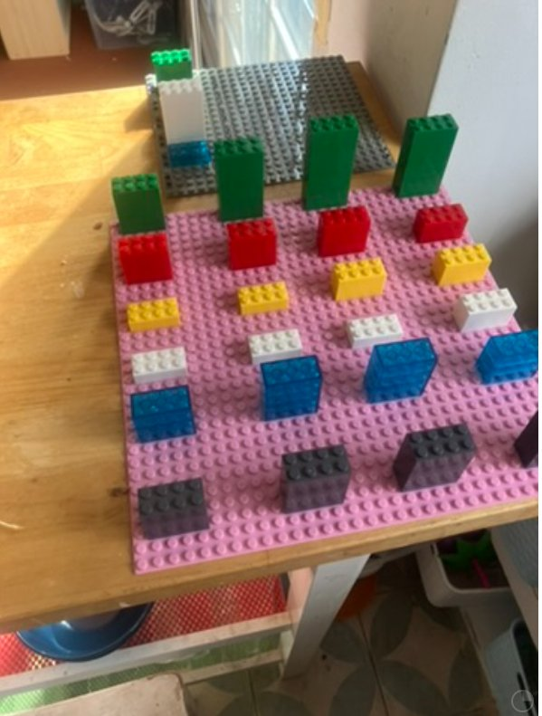

El dinero del día a día, en piezas de colores que se ven y se tocan. Para que toda la familia, también los niños, entienda en qué se va el mes y cuánto se ahorra.
Prototipo gratuito. Funciona en el ordenador y en el móvil, y no hace falta registrarse.

Una fila para cada cosa en la que gastáis (comida, ocio, gasolina, casa…) y una columna para cada semana. Cada pieza vale, por ejemplo, 10 €.
Cuando alguien de casa paga algo, pasa esas piezas a esta base, en la columna de la semana. Así se ve de un vistazo qué semana ha ido cara.
Al cerrar cada semana, lo que sobra (después de tapar huecos) viene aquí. A fin de mes, en esta base veis cuánto habéis ahorrado.
La app os dice cuántas piezas de cada color van en cada semana, según vuestro plan.
Se redondea: 23 € son 2 piezas de 10 €; 27 € son 3. Lo que se cobra solo del banco (hipoteca, luz, seguros) no entra en la mesa.
Del mismo color, y con sus consecuencias: esa semana tendrá menos. Si ya no queda de ese color, la semana se queda en rojo. Los imprevistos son solo para imprevistos.
Primero tapa los huecos de las semanas siguientes: del mismo color y, si ya están llenos, cambiando de color, solo los que falten. Lo que quede va a la hucha, o se guarda de más en una semana en la que sabéis que viene un gasto.
En la base de la hucha se ve cuánto habéis ahorrado: cada pieza es dinero que no se ha gastado.
Hacéis el plan, apuntáis cada gasto y la app os dice cuántas piezas mover. Calcula sola los préstamos entre semanas, los huecos y la hucha, y genera la hoja de reglas para la nevera.
Los datos se guardan solo en vuestro navegador. En el móvil, «Añadir a pantalla de inicio» la deja como una app más.
Abrir la appSi en casa hay piezas de construcción del mismo tamaño, valen. La app calcula cuántas hacen falta de cada color, con un 20 o 30 % de repuesto.
29 €
Kit previsto: unas 120 piezas compatibles en 6 colores, base del mes, base de los gastos, base de la hucha, pegatinas de valor y hoja de reglas.